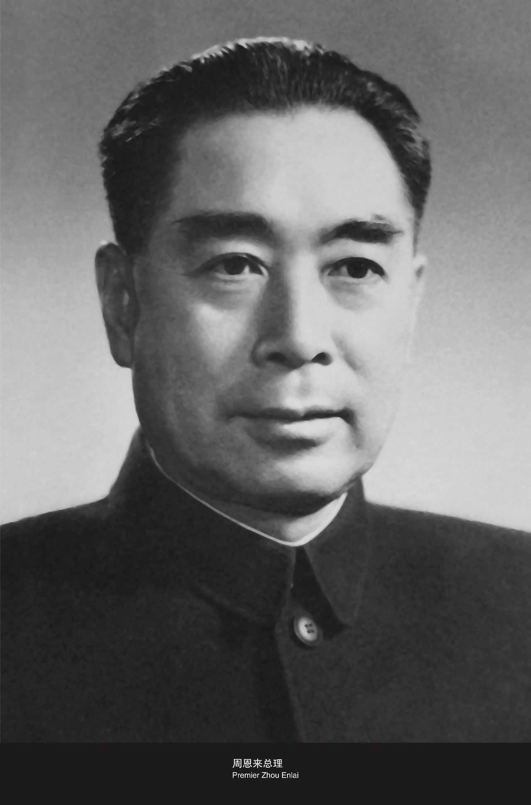

杨家岭 · 中央大礼堂
中共七大
中国共产党第七次全国代表大会
团结的大会 · 胜利的大会
1945年 · 四月 — 六月
向下滑动探索
中国共产党第七次全国代表大会
团结的大会 · 胜利的大会
1945年 · 四月 — 六月
视频即将上线
1945年4月-6月 · 杨家岭中央大礼堂
1945年4月23日至6月11日，中国共产党第七次全国代表大会在延安杨家岭中央大礼堂隆重召开。 这是党在新民主主义革命时期召开的一次极其重要的全国代表大会，确立了毛泽东思想为全党的指导思想， 选举产生了以毛泽东同志为核心的"五大书记"。

周